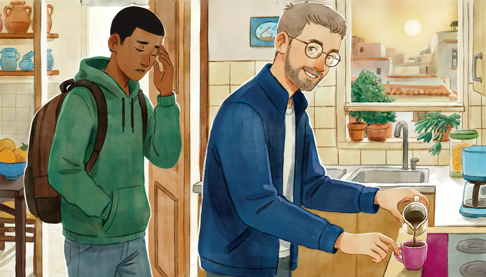

I can describe my daily routine and my job.Goal of this lesson · CEFR Sustained monologue: describing experience A2; Conversation A2
Paso 1 de 8
EscuchaListen
Listen to the conversation, then answer the questions.

A Tuesday, a quarter to seven in the morning. Alex is making coffee in Doña Lupita's kitchen when Diego comes down, half asleep. tú (Alex and Diego; Alex and Rocío); usted in the radio interview
First listen without the text. Press Escuchar todo and answer the first question. Then show the Spanish text and listen again.
ChooseWhat time does Alex get up on weekdays?
Your answer:
D
Diego¡Uf, buenos días! ¿Ya estás despierto?Ugh, good morning! You're up already?
A
AlexClaro, siempre me levanto a las seis. ¿Quieres café?Of course, I always get up at six. Do you want some coffee?
D
DiegoSí, porfa. ¿A las seis? ¿Todos los días?Yes, please. At six? Every day?
A
AlexDe lunes a viernes, sí. Empiezo a trabajar a las ocho y me gusta desayunar con calma.Monday to Friday, yes. I start work at eight and I like to have breakfast without rushing.
D
Diego¿Y qué haces tan temprano?And what do you do so early?
A
AlexLos lunes, miércoles y viernes salgo a correr. Primero corro media hora, luego me baño y me visto, y después desayuno.On Mondays, Wednesdays and Fridays I go for a run. First I run for half an hour, then I take a shower and get dressed, and after that I have breakfast.
D
Diego¡Qué disciplina! Yo normalmente me levanto a las ocho. Mis clases suelen empezar a las diez.What discipline! I normally get up at eight. My classes usually start at ten.
A
Alex¿Y hoy? ¿Por qué estás despierto?And today? Why are you up?
D
DiegoHoy tengo examen a las ocho, y tardo casi una hora en llegar a CU. ¡Ni modo!Today I have an exam at eight, and it takes me almost an hour to get to CU. Oh well!
A
AlexYo tengo suerte: la escuela está a veinte minutos en metro.I'm lucky: the school is twenty minutes away by metro.
D
Diego¿Y a qué hora vuelves a casa?And what time do you come back home?
A
AlexTrabajo de ocho a dos y vuelvo a las tres. Como con tu abuela y en la tarde preparo mis clases.I work from eight to two and I come back at three. I have lunch with your grandma and in the afternoon I prepare my classes.
D
Diego¿Y en la noche?And in the evening?
A
AlexCeno algo ligero, leo un rato y me acuesto a las once. Duermo siete horas.I have a light dinner, read for a while and go to bed at eleven. I sleep seven hours.
D
Diego¿Siete horas? ¡Qué envidia! Yo casi siempre estudio hasta la una. Duermo cinco o seis, como mucho.Seven hours? I'm so jealous! I almost always study until one. I sleep five or six, at most.
A
Alex¡Con razón siempre tienes sueño! Toma, tu café. ¡Suerte en el examen!No wonder you're always sleepy! Here, your coffee. Good luck on the exam!
1
ChooseListen again and answer.
Why is Diego up so early today?
What does Alex do before breakfast on Mondays, Wednesdays and Fridays?
How much do they sleep?
Un día con…: a radio interview
A morning radio show talks to a nurse about her working day. The host and the guest use usted.
N
NarradoraBuenos días. Hoy en «Un día con…» platicamos con Claudia Reyes, enfermera en un hospital público. ¡Bienvenida, Claudia!Good morning. Today on "A day with…" we're talking to Claudia Reyes, a nurse at a public hospital. Welcome, Claudia!
E
La enfermeraGracias. Buenos días a todos.Thank you. Good morning, everyone.
N
NarradoraClaudia, ¿cómo es un día normal para usted?Claudia, what's a normal day like for you?
E
La enfermeraEmpieza muy temprano. Me despierto a las cuatro y media, me baño y me visto rápido. Vivo en Ecatepec y tardo hora y media en llegar al hospital.It starts very early. I wake up at half past four, I take a shower and get dressed quickly. I live in Ecatepec and it takes me an hour and a half to get to the hospital.
N
Narradora¡Hora y media! ¿Y a qué hora empieza su turno?An hour and a half! And what time does your shift start?
E
La enfermeraA las siete. Primero hablo con las enfermeras del turno de la noche. Luego reviso los medicamentos y después visito a los pacientes, uno por uno.At seven. First I talk to the nurses from the night shift. Then I check the medicines and after that I visit the patients, one by one.
N
Narradora¿Y a qué hora come?And what time do you have lunch?
E
La enfermeraMi turno termina a las tres. Suelo comer en casa con mis hijos, como a las cuatro y media.My shift ends at three. I usually have lunch at home with my children, at about half past four.
N
Narradora¿Y en la noche?And in the evening?
E
La enfermeraAyudo a mis hijos con la tarea, sirvo la cena y me acuesto a las nueve y media. ¡Al día siguiente, otra vez!I help my children with their homework, I serve dinner and I go to bed at half past nine. And the next day, all over again!
N
NarradoraMuchas gracias, Claudia, y gracias por su trabajo.Thank you very much, Claudia, and thank you for your work.
1
ChooseAnswer the questions: Un día con…: a radio interview
How long does Claudia's trip to work take?
What does she do first at work?
When does she usually have la comida?
Paso 2 de 8
FíjateNotice
Read how it works. Play the examples and repeat them aloud.
Reflexive verbs: me levanto, me baño
me levanto · te levantas · se levanta · nos levantamos · se levantan
Many routine verbs are reflexive: the infinitive ends in -se (levantarse, to get up; bañarse, to take a shower). You already know one: llamarse (me llamo). The pronoun (me, te, se, nos, se) goes before the conjugated verb: me baño, te vistes, se acuesta. After an infinitive, it's attached to the end: me gusta levantarme temprano.
levantarse
bañarse
yo
me levanto
me baño
tú
te levantas
te bañas
él, ella, usted
se levanta
se baña
nosotros, nosotras
nos levantamos
nos bañamos
ellos, ellas, ustedes
se levantan
se bañan
From the conversation:
Claro, siempre me levanto a las seis. ¿Quieres café?Of course, I always get up at six. Do you want some coffee?
Los lunes, miércoles y viernes salgo a correr. Primero corro media hora, luego me baño y me visto, y después desayuno.On Mondays, Wednesdays and Fridays I go for a run. First I run for half an hour, then I take a shower and get dressed, and after that I have breakfast.
Ceno algo ligero, leo un rato y me acuesto a las once. Duermo siete horas.I have a light dinner, read for a while and go to bed at eleven. I sleep seven hours.
In Mexico, bañarse is the everyday word for taking a shower (la regadera = the shower). And despertarse (to wake up) is not the same as levantarse (to get out of bed).
Stem-changing verbs: empiezo, vuelvo, me visto
Some verbs change the vowel of the stem in every form except nosotros. You've seen this with querer (quiero), poder (puedo) and jugar (juego). There are three patterns: e → ie (empezar: empiezo), o → ue (volver: vuelvo; dormir: duermo; acostarse: me acuesto) and e → i (vestirse: me visto; servir: sirvo). The endings are regular.
empezar (e → ie)
volver (o → ue)
vestirse (e → i)
yo
empiezo
vuelvo
me visto
tú
empiezas
vuelves
te vistes
él, ella, usted
empieza
vuelve
se viste
nosotros, nosotras
empezamos
volvemos
nos vestimos
ellos, ellas, ustedes
empiezan
vuelven
se visten
From the conversation:
¿Y a qué hora vuelves a casa?And what time do you come back home?
Trabajo de ocho a dos y vuelvo a las tres. Como con tu abuela y en la tarde preparo mis clases.I work from eight to two and I come back at three. I have lunch with your grandma and in the afternoon I prepare my classes.
¿Siete horas? ¡Qué envidia! Yo casi siempre estudio hasta la una. Duermo cinco o seis, como mucho.Seven hours? I'm so jealous! I almost always study until one. I sleep five or six, at most.
Ayudo a mis hijos con la tarea, sirvo la cena y me acuesto a las nueve y media. ¡Al día siguiente, otra vez!I help my children with their homework, I serve dinner and I go to bed at half past nine. And the next day, all over again!
No change in nosotros: volvemos, dormimos, nos vestimos. And salir is irregular only in yo: salgo a correr.
In what order? Primero, luego, después, al final
To tell a routine step by step, use primero (first), luego and después (then, after that: use both to vary) and al final (at the end, finally). Después de + infinitive means "after …ing": después de comer (after eating).
From the conversation:
Los lunes, miércoles y viernes salgo a correr. Primero corro media hora, luego me baño y me visto, y después desayuno.On Mondays, Wednesdays and Fridays I go for a run. First I run for half an hour, then I take a shower and get dressed, and after that I have breakfast.
A las siete. Primero hablo con las enfermeras del turno de la noche. Luego reviso los medicamentos y después visito a los pacientes, uno por uno.At seven. First I talk to the nurses from the night shift. Then I check the medicines and after that I visit the patients, one by one.
Andamio: soler + infinitivo, empezar a + infinitivo
Two new Andamio structures. Soler + infinitive = to usually do something; it changes o → ue, like volver: suelo comer en casa. Empezar a + infinitive = to start doing something: empiezo a trabajar a las ocho. With a reflexive verb, the pronoun can go before soler or on the infinitive: me suelo levantar = suelo levantarme.
From the conversation:
De lunes a viernes, sí. Empiezo a trabajar a las ocho y me gusta desayunar con calma.Monday to Friday, yes. I start work at eight and I like to have breakfast without rushing.
¡Qué disciplina! Yo normalmente me levanto a las ocho. Mis clases suelen empezar a las diez.What discipline! I normally get up at eight. My classes usually start at ten.
Mi turno termina a las tres. Suelo comer en casa con mis hijos, como a las cuatro y media.My shift ends at three. I usually have lunch at home with my children, at about half past four.
With a noun, empezar has no a: la clase empieza a las ocho. With a verb, add a: empiezo a estudiar, not empiezo estudiar.
Paso 3 de 8
PracticaPractice
Do the exercises in order. They get freer as you go.
1
ChooseChoose the right pronoun: me, te, se or nos.
Diego ___ levanta a las ocho.
Yo ___ baño en la mañana.
¿A qué hora ___ acuestas?
Mi hermana y yo ___ vestimos muy rápido.
Mis papás ___ acuestan temprano.
2
Type the missing wordsComplete with the present tense. Watch the stem change.
La clase a las ocho. (empezar)
The class starts at eight.
¿A qué hora a casa? (volver, tú)
What time do you come back home?
Yo siete horas. (dormir)
I sleep seven hours.
Nosotros a las tres. (volver)
We come back at three.
Doña Lupita el café a las siete. (servir)
Doña Lupita serves the coffee at seven.
Me en cinco minutos. (vestirse, yo)
I get dressed in five minutes.
Los niños a las nueve. (acostarse)
The children go to bed at nine.
3
Listen and chooseThree people talk about their mornings. Listen and answer.
When does Mariana usually leave work?
Show what they say
Mariana: Entre semana me levanto a las siete y cuarto. Suelo llegar a la oficina a las nueve, y casi nunca salgo antes de las siete de la noche.
What does Rocío do first?
Show what they say
Rocío: Primero llevo a Valentina y a Mateo a la escuela, y luego camino al trabajo. Al final del día, cenamos los tres juntos.
What does Doña Lupita do between six and seven?
Show what they say
Doña Lupita: Yo me despierto a las seis, pero me levanto a las siete. Primero escucho el radio en la cama.
4
Type the missing wordsAndamio: complete with soler or empezar a.
Yo comer a las tres. (soler)
I usually eat at three.
¿Tú desayunar en casa? (soler)
Do you usually have breakfast at home?
Nosotros cenar tarde. (soler)
We usually have dinner late.
Mariana a trabajar a las nueve. (empezar)
Mariana starts working at nine.
¿A qué hora empiezas estudiar?
What time do you start studying?
5
Put the words in orderPut the words in order.
First I take a shower and then I have breakfast.
I usually go to bed at eleven.
What time do you start work?
6
Say it in SpanishNow you. Say it in Spanish (or type it).
Say you get up at seven.
Me levanto a las siete.
Say first you take a shower and then you get dressed.
Primero me baño y luego me visto.
Ask a friend what time he goes to bed.
¿A qué hora te acuestas?
Say you usually have lunch at home.
Suelo comer en casa.
Say you start work at nine.
Empiezo a trabajar a las nueve.
Say you come back home at six.
Vuelvo a casa a las seis.
7
Your own sentencesYour weekday.
Write 5–6 sentences about a normal weekday: when you get up, what you do first and then, when you start and finish work or classes, and when you go to bed. Use primero, luego, después, al final and suelo once.
Show a model answer
Entre semana me levanto a las seis y media. Primero me baño y me visto, y luego desayuno café y fruta. Salgo de casa a las siete y media y empiezo a trabajar a las ocho y media. Suelo comer a las dos y media con mis compañeros. Vuelvo a casa a las seis. Al final del día, ceno, leo un rato y me acuesto a las once.
Check your answer:
Paso 4 de 8
PalabrasWords
Listen to each word and repeat it. Then do the quick check.
The Narvarte neighborhood magazine has a page called «Un día con…». This month: Don Chuy.
Neighborhood magazine
Un día con… don Chuy
Jesús, «don Chuy» para todos los vecinos, tiene sesenta y tres años y una fonda en la colonia Narvarte. Su día empieza muy temprano: se levanta a las cinco, se baña y se toma un café de olla con pan dulce.
Los lunes y los jueves va a la Central de Abastothe city's huge wholesale market a comprar fruta, verdura y carne. A las ocho abre la fonda y sirve los desayunos: chilaquiles, huevos y tamales.
A las once empieza a preparar la comida corrida. Entre las dos y las cuatro, la fonda está llena de oficinistas, estudiantes y maestros. «Muchos clientes vienen todos los días. Ya séI already know qué van a pedir», dice don Chuy, y se ríelaughs.
En la tarde descansarests una hora. En la noche vende tacos y quesadillas hasta las diez. Después, limpia la cocina con su esposa, vuelve a casa y suele acostarse a las once y media. ¿Y los domingos? «Los domingos duermo hasta las ocho y como con mis hijos y mis siete nietos. ¡Es mi día favorito!»
Words with a dotted underline have a translation: tap or hover.
1
ChooseAnswer the questions about the text.
When does Don Chuy go to the Central de Abasto?
When is the fonda full?
What does Don Chuy do on Sundays?
Paso 6 de 8
CulturaCulture
Read about the culture behind the language.
Long days and a late comida
Mexicans work some of the longest hours in the OECD: about 2,200 hours a year per worker in 2023, against an OECD average of about 1,750. The legal limit has long been 48 hours a week (eight hours a day, six days, with one day of rest). That is now changing: the 40-hour week is being phased in, and according to the government's proposal the change is gradual, step by step up to 2030.
The day is organized around la comida, the main meal, at about 2 or 3 p.m. (often later). Many people have a quick desayuno at home or buy a torta or a tamal on the way; at work, the hora de la comida is often a comida corrida at a fonda. In many offices the day runs from 9 a.m. to 6 or 7 p.m., so la cena is late and light: pan dulce and coffee, or a couple of quesadillas.
Then there's the trip to work. INEGI's 2017 Origin–Destination Survey counted about 34.5 million trips on a weekday in the Valle de México metropolitan area. More than half of the trips to work took between half an hour and two hours, and about one in twenty took longer. Rush hour starts early: over four million trips began between 7 and 8 a.m.
Elsewhere: In Spain the main meal is also at about 2–3 p.m. and is also called la comida. In much of South America the midday meal is el almuerzo; in Mexico, almuerzo usually means a late, hearty breakfast.
Sources
OECD, “Hours worked” indicator (OECD Data Explorer): average annual hours per worker, 2023 (Mexico about 2,207).
Ley Federal del Trabajo, arts. 61 and 69 (8-hour day shift; one rest day in seven); Gobierno de México, Secretaría del Trabajo y Previsión Social (STPS): proposal for a 40-hour work week, with a gradual reduction up to 2030.
INEGI, Encuesta Origen-Destino en Hogares de la Zona Metropolitana del Valle de México (EOD) 2017.
1
ChooseCheck: what did you learn?
In Mexico, la comida is…
Paso 7 de 8
Tu turnoYour turn
Now use it: do the role play, then write.
Role play: «Un día con…» for the school newsletter
Rocío is writing a «Un día con…» page about the teachers for the school newsletter. She interviews you about your weekday. Use tú. Talk about your own routine (or Alex's).
You
Say when you get up on weekdays.
Say what you do first, then and after that.
Say when you start and finish work or classes.
Say what you usually do in the afternoon and evening (suelo…).
Say when you go to bed and how many hours you sleep.
Rocío
Asks what time you get up.
Asks what you do before work.
Asks about the afternoon.
Asks about the evening and bedtime.
Says what her own mornings are like.
1. Listen to a model
One way the conversation could go. Listen, then try it yourself without looking.
R
RocíoAlex, para el boletín de la escuela escribo una sección: «Un día con…». ¿Te puedo hacer unas preguntas?Alex, I'm writing a section for the school newsletter: "A day with…". Can I ask you a few questions?
A
Alex¡Claro que sí!Of course!
R
Rocío¿A qué hora te levantas entre semana?What time do you get up on weekdays?
A
AlexMe levanto a las seis. Tres veces a la semana salgo a correr.I get up at six. Three times a week I go for a run.
R
Rocío¿Y después?And then?
A
AlexPrimero me baño y me visto. Luego desayuno con calma y salgo a las siete y media.First I take a shower and get dressed. Then I have a relaxed breakfast and leave at half past seven.
R
Rocío¿Y qué haces en la tarde?And what do you do in the afternoon?
A
AlexVuelvo a casa a las tres y como con doña Lupita. Después preparo mis clases.I come back home at three and have lunch with Doña Lupita. After that I prepare my classes.
R
Rocío¿Y en la noche? ¿Sales mucho?And in the evening? Do you go out much?
A
AlexNo mucho. Suelo leer un rato y me acuesto a las once. ¡A esa hora ya tengo sueño!Not much. I usually read for a while and I go to bed at eleven. By then I'm already sleepy!
2. Record yourself
Say your part aloud (pause the model after each of Rocío's lines), or answer the questions in the role card. Then play it back and compare.
3. Practice with an AI partner (optional)
Copy this prompt into ChatGPT or Claude, switch on voice mode, and have the conversation. It plays Rocío.
Stuck? Say «ayuda» and it gives you a hint in English, then carries on.
Finished? Say «terminamos» and it gives you feedback in English: what you did well, your mistakes, and useful phrases for next time.
Let's practice Spanish (Mexican Spanish, level A2). You are Rocío Garza, 46, director of the Escuela de Idiomas Puente in Mexico City, from Monterrey, divorced, with two children (Valentina, 12, and Mateo, 8). Use "tú": everyone at the school does.
You're writing a page called "Un día con…" for the school newsletter and you interview me about my weekday. About you: you get up at 5:45, take Valentina and Mateo to school, walk to work, eat at about 3, and have dinner with your children at 8.
Rules:
- Speak only Spanish, short turns (1-2 sentences), simple language for an A2 learner.
- Ask me, one question at a time: what time I get up, what I do first and then, when I start and finish work, what I usually do in the afternoon and evening, and when I go to bed. Use the present tense, reflexive verbs and "soler". When I ask, tell me about your own mornings in two sentences.
- You play only this one person. Never speak as anyone else, and don't describe what other people say or do.
- If I make a mistake, don't stop me: repeat what I said correctly in your answer (for example: if I say "Yo levanto a las seis", you say "Ah, te levantas a las seis. ¡Qué temprano!"; if I say "Yo dormo siete horas", you say "¿Duermes siete horas? ¡Qué bien!").
- Near the end, ask something I may not expect: "¿Y los fines de semana también te levantas temprano?"
- When I say "ayuda", step out of the role play for a moment: in English, give me a short hint about what I could say next, with one or two short Spanish options, then continue the role play where we were.
- When I say "terminamos", stop the role play and give me feedback in English: 3 things I did well, up to 3 mistakes with corrections, and 3 useful phrases for next time.
Start now: say "Oye, ¿te puedo hacer unas preguntas para el boletín?"
Writing: My typical day
Write your text for the «Un día con…» page: your typical weekday from morning to night, your work or studies, and one thing you usually do on the weekend.
60–80 words.
Show a model answer
Soy maestro de inglés en la Escuela de Idiomas Puente. Entre semana me levanto a las seis. Tres días a la semana salgo a correr. Luego me baño, me visto, desayuno y tomo el metro. Empiezo a trabajar a las ocho y vuelvo a casa a las tres. En la tarde preparo mis clases. Al final del día, leo un rato y me acuesto a las once. Los sábados suelo ir al mercado con doña Lupita.
Check your text:
Paso 8 de 8
¿Lo logré?Did I do it?
Check yourself against the goal of the lesson.
Read each statement and be honest: anything marked casi or todavía no goes into Repaso so it comes back soon.
I can describe my weekday from morning to night.
I can use reflexive verbs: me levanto, me baño, me acuesto.
I can use stem-changing verbs: empiezo, vuelvo, duermo, me visto.
I can put actions in order with primero, luego, después, al final.
I can say what I usually do with suelo… and when I start with empiezo a….